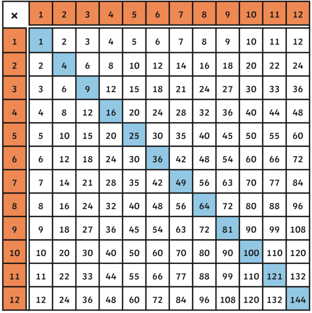

Challenges.
My main challenge in this lab was mainly for task X. When I was trying to figure out how to make the function work with an array instead, it took quite a bit of time and experimenting to get it right.
Problems.
My main problem with this lab was also related to task X. I kept struggling to make the array work with more than 4 pieces, and even though I've made it work with 5, I think a lot of the code could still be improved.
Results.
Here are the results/execution for the program.
A picture of the object created in my js file.
Script Output
Empty!